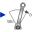
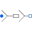

ThyristorBridge2mPulse_DC_Drive2*m pulse thyristor bridge feeding a DC drive |
|
Diagram
{kind=link}
Information
This information is part of the Modelica Standard Library maintained by the Modelica Association.
In this example a PM excited DC machine is started with nominal torque at nominal speed. After 5 seconds, load torque is reduced to zero over a period of additional 10 seconds. At 15 seconds, the machine is operating at no load.
Plot current currentSensor.i, average current meanCurrent.y, voltage voltageSensor.v and average voltage meanVoltage.v.
Parameters (10)
| Vrms |
Value: dcpmData.VaNominal / Modelica.Electrical.MultiPhase.Functions.factorY2DC(m) Type: Voltage (V) Description: RMS supply voltage |
|---|---|
| f |
Value: 50 Type: Frequency (Hz) Description: Frequency |
| SMains |
Value: 250E3 Type: ApparentPower (V·A) Description: Mains short circuit apparent power |
| lamdaMains |
Value: 0.1 Type: Real Description: Mains short circuit power factor |
| ZMains |
Value: Vrms ^ 2 / SMains * m Type: Impedance (Ω) Description: Mains short circuit impedance |
| RMains |
Value: ZMains * lamdaMains Type: Resistance (Ω) Description: Mains resistance |
| LMains |
Value: ZMains * sqrt(1 - lamdaMains ^ 2) / (2 * pi * f) Type: Inductance (H) Description: Mains inductance |
| Ld |
Value: 3 * dcpmData.La Type: Inductance (H) Description: Smoothing inductance |
| tauNominal |
Value: dcpmData.ViNominal * dcpmData.IaNominal / dcpmData.wNominal Type: Torque (N·m) Description: Nominal torque |
| dcpmData |
Value: Type: DcPermanentMagnetData Description: Data record of PM excited DC machine |
Outputs (2)
| w |
Default Value: dcpm.wMechanical Type: AngularVelocity (rad/s) |
|---|---|
| tau |
Default Value: dcpm.tauShaft Type: Torque (N·m) |
Components (18)
| sinevoltage |
Type: SineVoltage |
|
|---|---|---|
| rectifier |
Type: ThyristorBridge2mPulse |
|
| voltagesensor |
Type: VoltageSensor |
|
| meanVoltage |
Type: Mean |
|
| rootMeanSquareVoltage |
Type: RootMeanSquare |
|
| currentSensor |
Type: CurrentSensor |
|
| meanCurrent |
Type: Mean |
|
| pulse2 |
Type: VoltageBridge2mPulse |
|
| inductor |
Type: Inductor |
|
| dcpm |
Type: DC_PermanentMagnet |
|
| dcpmData |
Type: DcPermanentMagnetData Description: Data record of PM excited DC machine |
|
|  | torque |
Type: Torque |
| ramp |
Type: Ramp |
|
| const |
Type: Constant |
|
| rMains |
Type: Resistor |
|
| lMains |
Type: Inductor |
|
|  | earthing |
Type: MultiStarResistance |
| ground |
Type: Ground |